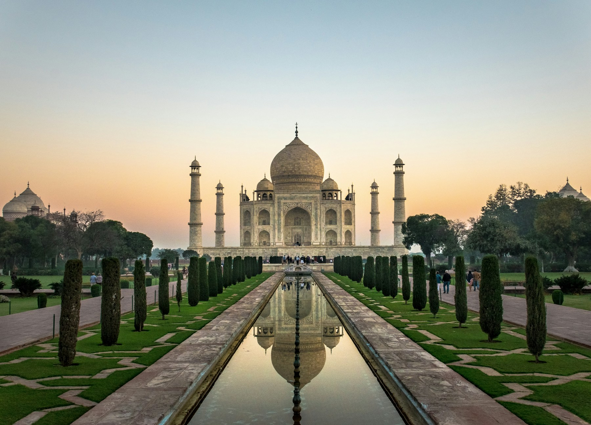

MADE OF MOMENTS. MADE FOR YOU.
India, at
your pace.
Chase mountain mornings. Take the long way to the sea.
Find your kind of India with Canty Tours.
MANY WORLDS. ONE INDIA.
Where will your curiosity take you?
From familiar favourites to somewhere entirely new.
Pick a place. We’ll help you find your way.
Have another place in mind? Let’s plan anywhere in India ↗
A LITTLE INSPIRATION TO START
Good journeys start here.
Explore a route, make it your own.
These sample itineraries are a starting point.
Your next trip is still out there.
Try a wider search, or ask us to create a route around your plans.
Journey ideas only. Prices, hotels, activities and availability are confirmed in your personalised quotation. Flights are not assumed to be included.

for wonder.THE CANTY WAY
LESS RUSH. MORE REASONS TO REMEMBER.
A holiday should
feel like you.
The best part of a trip isn’t always on the itinerary. It’s a second cup of chai, a turn down a quieter street, or a view you don’t want to leave.
Start with what matters to you. Let’s shape the route around it.
Your people. Your pace.
A family holiday, time for two, or an escape with friends—tell us how you like to travel.
The details, in the open.
Ask for a clear breakdown of stays, transport, activities and exclusions before you decide.
A conversation, not a checkout.
Talk through your dates and ideas directly with Canty Tours on WhatsApp.
LET’S TURN “SOMEDAY” INTO A PLAN
Your next story
starts with
a hello.
A destination, a rough idea, or just the urge to go.
Tell us what you’re dreaming of.
Prefer to keep it simple?
Say hello on WhatsApp ↗
Can I customise a journey?+
Yes—use any sample route as a conversation starter. Share your preferred dates, destinations, travel style and budget with Canty Tours to discuss a personalised itinerary.
How do I get a price?+
Use the trip planner or WhatsApp link to request a quote. Your price will depend on the dates, number of travellers, stays, transport and activities. Ask for taxes, inclusions and exclusions in writing.
Are flights and hotels included?+
Nothing is automatically included in the sample journeys. Your final quotation should specify each hotel, meal, transfer, flight and activity that is included.
Can you help with destinations beyond these ideas?+
Absolutely—tell us where in India you want to go. The journeys on this page are inspiration for your enquiry, rather than a complete list of destinations.
What happens after I send an enquiry?+
Your prepared message opens in WhatsApp, where you can review and send it to Canty Tours. Discuss availability and the itinerary directly. Sending an enquiry does not confirm a booking or take payment.
What are the cancellation terms?+
Terms depend on the final arrangements and suppliers. Request the applicable cancellation, refund and payment terms from Canty Tours before making a payment.